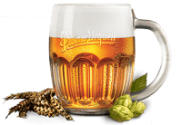

В Трактир "Зер Гут" хочется возвращаться
Трактир "ЗЕР ГУТ" представляет традиционную чешскую кухню и предлагает широкий выбор сытных и вкусных мясных блюд — Рулька "Швейк в полевой обедне", Ребра "Швейк на родине в Будейвицах", и конечно же, чешские колбаски, великолепно сочетающиеся Pilsner Urquell.


Pilsner Urquell - это прадед всех чешских лагеров - золотистого цвета с чистым мягким вкусом и богатым ароматом душистого хмеля. Путем создания особых условий перевозки, хранения, розлива и подачи - мы доносим до наших гостей оригинальный вкус пива, которое доставляется в Трактир "Зер Гут" напрямую из Чехии.